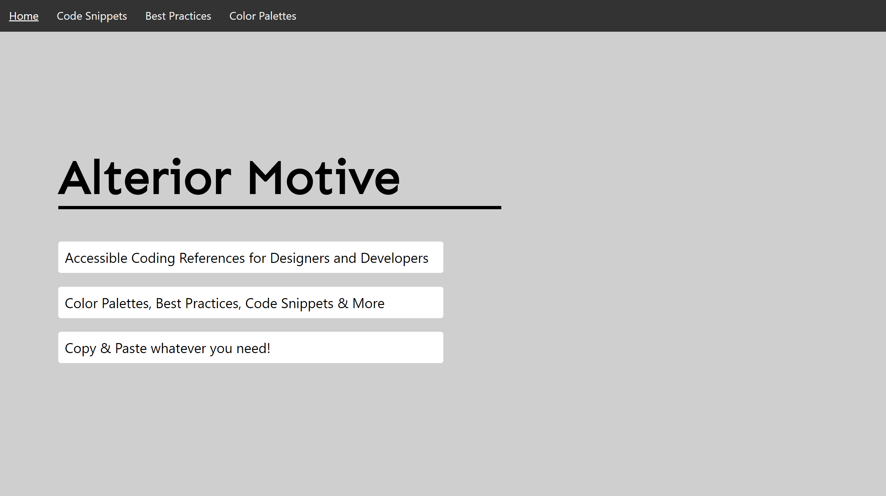
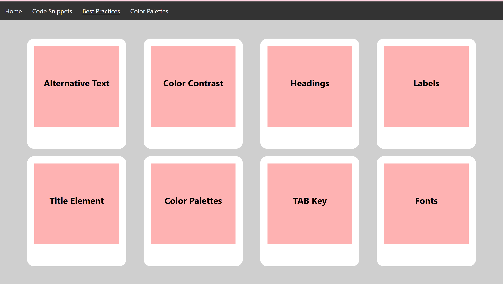
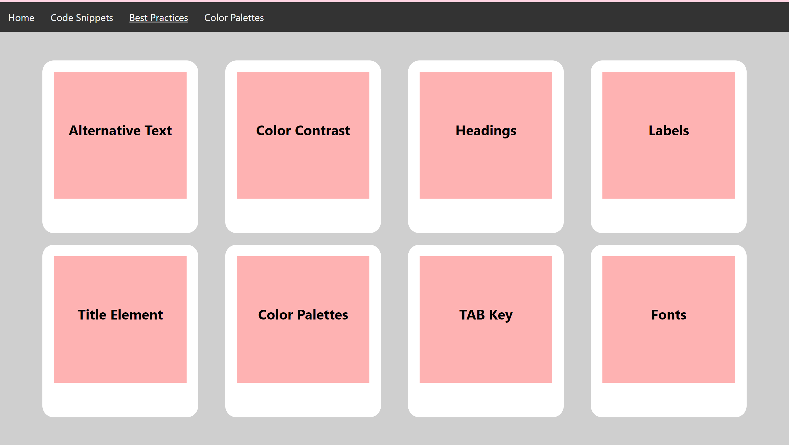

Accessible Web Development
While navigating the internet, users with disabilities constantly encounter inappropriate alternative text, low contrast, empty links and many other problems that keep them from navigating the web smoothly. How might we make accessible web design more intuitive for designers?

Skills Used
- Illustrator
- InDesign
- Figma
- React.js
- Node.js
- Firebase
- Heroku
- Netlify
- HTML
- CSS
- JS
Logo
Process
I started by researching web accessibility and the most common accessibility issues on websites. This taught me that most websites are low contrast and missing elements that are quite simple to implement, such as alternative text for images, form input labels, and document language. Taking that into consideration, I decided to narrow the scope of my project to visual impairments. I then sent out surveys and interviewed designers, developers, and people with different types of visual impairments such as color vision deficiency and low vision. After this initial research, I reached a pivoting point; implementing accessibility into websites was not as hard as I thought it would be. The main issue was that accessibility was often an afterthought and tasks that would have been simple if implemented from the beginning, such as adding alternative texts for images, turned into a substantial amount of work. On top of that, having to go back into your code at the end of your design process to implement accessibility tools, such as a screen readable navigation bar, turns into a risky task, often leading to hours of debugging, which is something I could relate to as both a designer and a developer. I then decided to include accessible code snippets, color palettes, and best practices on my website with the hopes of creating a platform that would teach and encourage developers to think about accessibility from the beginning of their design process. After a few weeks of wire-framing the website, card sorting, and usability testing, I prototyped a high-fidelity website using Figma. I am currently coding this website in React.js and so far I have learned that in order for a design project to translate well into code, it is important to have a little bit of an engineer mindset. Being able to predict the challenges a developer could come across while implementing your designs allows you to be two steps ahead of any issues you may encounter.
Web Implementation
 


Storyboard

Wireframes

Figma Prototype


Social Media Platform
I also decided to code part of my project as a Social Media platform to share accessible color palettes. Here is a video of the working project!